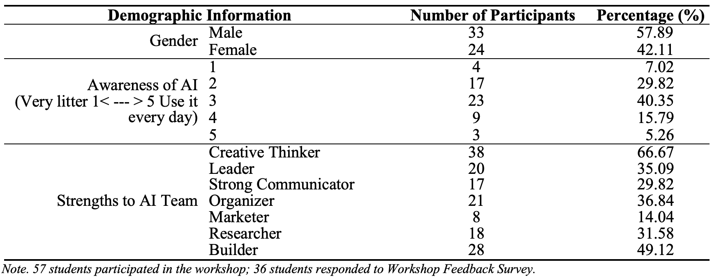

Implementation
A. Participants:A total of 57 applications were accepted to participate in the workshop, while 36 students (63.16%) responded to Workshop Feedback Survey. The students were divided into 3 community groups (19-20 student per group) to rotate in 4 AI stations (20 minutes per station). To participate in the AI competition in the end of the workshop, students worked in a team with 4-5 students to create/design their AI prototype for the AI-PBL competition, develop an AI-PBL presentation, and present the group project to compete with other teams. Below is the demographic information for the 57 participants. Table 1 Demographic Information for 57 Participants B. Activity Summary:Students started by engaging in a 15-minute AI introduction section and 1.5-hour AI workshop stations in order to learn about the basic concepts of AI technologies and practical examples introduced in the stations. These concepts include Artificial Intelligence, Machining Learning, Deep Learning, Expert System, Machine Learning Model, Visual Perception, Chatbots/Voice Experience, and Generative AI technologies. The potential risks and ethical concerns of AI technologies and design thinking model (Empathize, Define, Ideate, Prototype, and Test) were presented to prepare students to design the AI prototype to support their summer vocation. To compete, students worked in a team to develop the AI prototype for their AI-PBL project whose focus is “How could AI be used to responsibly enhance your summer break experience?” After learning in the stations, students were introduced to the AI-PBL project and spent 30 minutes to brainstorm their ideas/questions individually first and collaboratively within a team. After students were clear about the project, they spent 2 hours working closely to develop their prototypes while 6 experienced AI experts rotated to monitor and guide students to present their ideas and develop their final presentation. Student teams participated in the AI competition by presenting their AI-PBL projects. A winning team were selected to receive the AI winner award based upon a review rubric. In Table 1, the agenda of the AI Challenge Day workshop is presented. | ||
|
Abstract | Introduction | Literature Review | Implementation | Research Method | Results | References |
|
E-mail: ichuntsai65@gmail.com | © 2024 I-Chun Tsai, University of Akron |